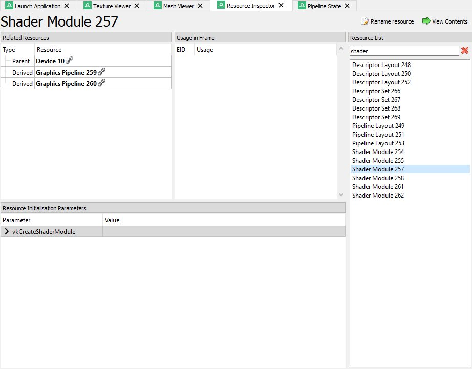
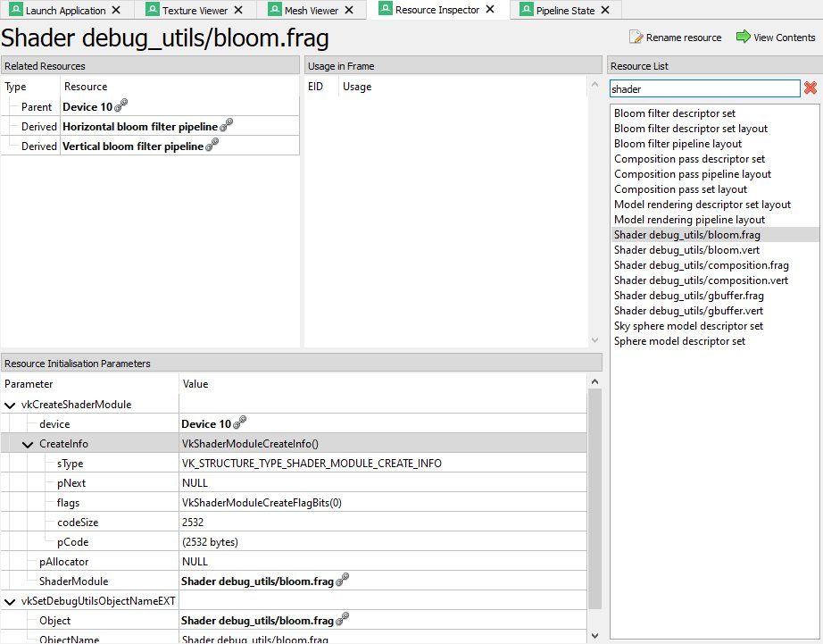
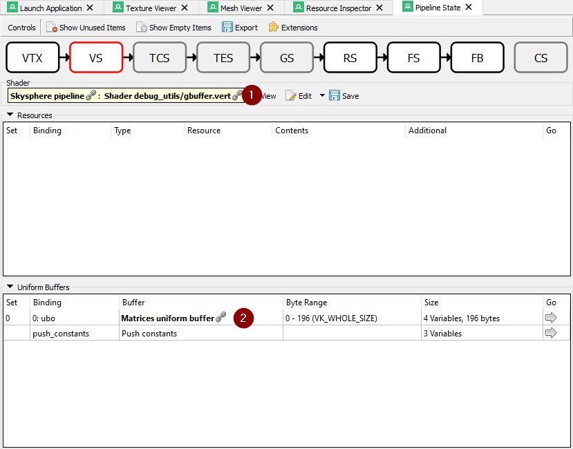
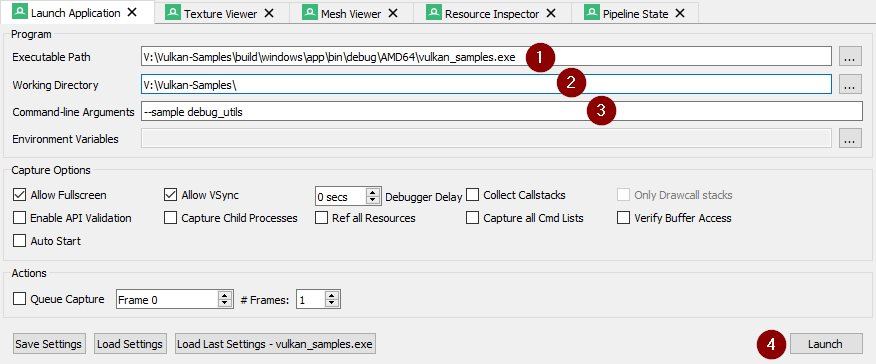
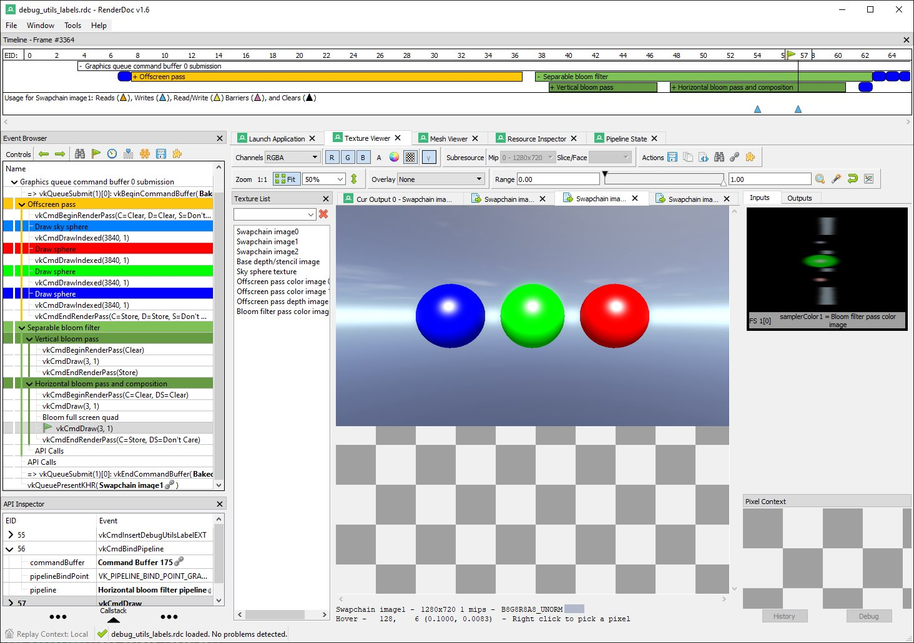

Vulkan Debug Utilities Extension
| The source for this sample can be found in the Khronos Vulkan samples github repository. |
Overview
This tutorial, along with the accompanying example code, demonstrates the use of the VK_EXT_debug_utils extension to setup a validation layer messenger callback and pass additional debugging information to debuggers like RenderDoc.
VK_EXT_debug_utils has been introduced based on feedback for the initial Vulkan debugging extensions VK_EXT_debug_report and VK_EXT_debug_marker, combining these into a single instance extensions with some added functionality.
Setup
Enabling the extension is done inside the framework, see the Instance class in instance.cpp for details.
|
Enabling the functionality for the debug utilities is done by adding the extension to the list of extensions to enable at instance level. As with all extensions, this is optional and you should check if the extension is present before enabling it.
uint32_t instance_extension_count;
VK_CHECK(vkEnumerateInstanceExtensionProperties(nullptr, &instance_extension_count, nullptr));
std::vector<VkExtensionProperties> available_instance_extensions(instance_extension_count);
VK_CHECK(vkEnumerateInstanceExtensionProperties(nullptr, &instance_extension_count, available_instance_extensions.data()));
bool debug_utils = false;
for (auto &available_extension : available_instance_extensions)
{
if (strcmp(available_extension.extensionName, VK_EXT_DEBUG_UTILS_EXTENSION_NAME) == 0)
{
debug_utils = true;
extensions.push_back(VK_EXT_DEBUG_UTILS_EXTENSION_NAME);
}
}Validation
Validation setup is done inside the framework, see the Instance class in instance.cpp for details.
|
After creating your instance with the VK_EXT_debug_utils extension enabled, you’ll be able to use the debug functions that it provides.
Setting Up
Depending on the implementation and loader you’re using you may need to manually get the function pointers for these via vkGetInstanceProcAddr before you can use these.
|
vkCreateDebugUtilsMessengerEXT is used for setting up the debug messenger callback that is triggered by the validation layers:
VkDebugUtilsMessengerCreateInfoEXT debug_utils_create_info = {VK_STRUCTURE_TYPE_DEBUG_UTILS_MESSENGER_CREATE_INFO_EXT};
debug_utils_create_info.messageSeverity = VK_DEBUG_UTILS_MESSAGE_SEVERITY_ERROR_BIT_EXT | VK_DEBUG_UTILS_MESSAGE_SEVERITY_WARNING_BIT_EXT;
debug_utils_create_info.messageType = VK_DEBUG_UTILS_MESSAGE_TYPE_VALIDATION_BIT_EXT;
debug_utils_create_info.pfnUserCallback = debug_utils_messenger_callback;We then pass this to the pNext member of our instance creation structure, enabling validation for instance creation and destruction:
VkInstanceCreateInfo instance_create_info = {VK_STRUCTURE_TYPE_INSTANCE_CREATE_INFO};
...
instance_create_info.pNext = &debug_utils_create_info;After instance creation we can create the actual debug utils messenger callback that is invoked by the enabled validation layers:
result = vkCreateDebugUtilsMessengerEXT(handle, &debug_utils_create_info, nullptr, &debug_utils_messenger);The messageSeverity member of the VkDebugUtilsMessengerCreateInfoEXT struct determines the kind of validation layer messages that are passed to the user callback:
-
VK_DEBUG_UTILS_MESSAGE_SEVERITY_VERBOSE_BIT_EXT: Verbose messages, including diagnostic messages from loaders, layers and drivers. -
VK_DEBUG_UTILS_MESSAGE_SEVERITY_INFO_BIT_EXT: Informational message like resource details. -
VK_DEBUG_UTILS_MESSAGE_SEVERITY_WARNING_BIT_EXT: Warnings that may hint at application side bugs and undefined behavior. -
VK_DEBUG_UTILS_MESSAGE_SEVERITY_ERROR_BIT_EXT: Errors caused by application side violation of valid usage as specified by the spec.
In your typically validation setup you’d use VK_DEBUG_UTILS_MESSAGE_SEVERITY_WARNING_BIT_EXT and VK_DEBUG_UTILS_MESSAGE_SEVERITY_ERROR_BIT_EXT to catch bugs and errors in your application.
A basic debug messenger callback may then look like this:
VKAPI_ATTR VkBool32 VKAPI_CALL debug_utils_messenger_callback(
VkDebugUtilsMessageSeverityFlagBitsEXT message_severity,
VkDebugUtilsMessageTypeFlagsEXT message_type,
const VkDebugUtilsMessengerCallbackDataEXT *callback_data,
void *user_data)
{
if (message_severity & VK_DEBUG_UTILS_MESSAGE_SEVERITY_WARNING_BIT_EXT)
{
LOGW("{} - {}: {}", callback_data->messageIdNumber, callback_data->pMessageIdName, callback_data->pMessage)
}
else if (message_severity & VK_DEBUG_UTILS_MESSAGE_SEVERITY_ERROR_BIT_EXT)
{
LOGE("{} - {}: {}", callback_data->messageIdNumber, callback_data->pMessageIdName, callback_data->pMessage);
}
return VK_FALSE;
}With the above setup, Vulkan spec violations of your application will now be reported to the standard output like this:
Error: 0 - UNASSIGNED-CoreValidation-DrawState-InvalidRenderArea: Cannot execute a render pass with
renderArea not within the bound of the framebuffer. RenderArea: x 0, y 0, width 1281, height 721.
Framebuffer: width 1280, height 720.Adding information for debugging tools
In this chapter we will take a look at how to pass additional information from our application to debugging tools.
The debug utilities adds several functions to add debugging information to your sample application’s command buffers, queues, and all other Vulkan objects.
Inserting labels
The extension allows you to add colored labels to command buffers and queues, that work as markers inside the Vulkan Event chain.
This is esp. helpful in more complex applications with multiple command buffers in flight across different queues.
For comparison here is an unmarked event view from RenderDoc versus one viewed using debugging labels:
Color choice aside, it’s clear that the event tree with added debug labels is much easier to navigate.
There are two distinct concepts for adding labels to either a command buffer or a queue:
-
Encapsulating labels: These are started with a
begincommand and closed with anendcommand. They encapsulate all submitted commands in between and can be arbitrarily nested. -
Inserting labels: Those are inserted at the exact point where the commands are submitted. Think of these as simple markers.
The new functions to add such labels are:
-
For command buffers
-
vkCmdBeginDebugUtilsLabelEXT -
vkCmdEndDebugUtilsLabelEXT -
vkCmdInsertDebugUtilsLabelEXT
-
-
For queues
-
vkQueueBeginDebugUtilsLabelEXT -
vkQueueEndDebugUtilsLabelEXT -
vkQueueInsertDebugUtilsLabelEXT
-
Once you start a new label via vkCmd/QueueBeginDebugUtilsLabelEXT all commands submitted to that command buffer or queue are encapsulated by that label until you end it via vkCmd/QueueEndDebugUtilsLabelEXT whereas a call to vkCmd/QueueInsertDebugUtilsLabelEXT simply inserts a marker at the current command buffer or queue command position;
For convenience, the sample wraps those functions into dedicated functions.
In this (simplified) code from our sample application we use encapsulating and nested labels to tag the whole separable bloom filter passes for the debugger, and also insert a marker before submitting the draw command for the bloom pass' full-screen quad:
cmd_begin_label(draw_cmd_buffers[i], "Separable bloom filter", {0.5f, 0.76f, 0.34f, 1.0f});
cmd_begin_label(draw_cmd_buffers[i], "Vertical bloom pass", {0.4f, 0.61f, 0.27f, 1.0f});
vkCmdBeginRenderPass(draw_cmd_buffers[i], ...);
vkCmdSetViewport(draw_cmd_buffers[i], ...);
vkCmdSetScissor(draw_cmd_buffers[i], ...);
vkCmdBindDescriptorSets(draw_cmd_buffers[i], ...);
vkCmdBindPipeline(draw_cmd_buffers[i], ...);
vkCmdDraw(draw_cmd_buffers[i], ...);
vkCmdEndRenderPass(draw_cmd_buffers[i]);
cmd_end_label(draw_cmd_buffers[i]);
cmd_begin_label(draw_cmd_buffers[i], "Horizontal bloom pass and composition", {0.4f, 0.61f, 0.27f, 1.0f});
vkCmdBeginRenderPass(draw_cmd_buffers[i], ...);
vkCmdSetViewport(draw_cmd_buffers[i], ...);
vkCmdSetScissor(draw_cmd_buffers[i], ...);
vkCmdBindDescriptorSets(draw_cmd_buffers[i], ...);
vkCmdBindPipeline(draw_cmd_buffers[i], ...);
vkCmdDraw(draw_cmd_buffers[i], ...);
cmd_insert_label(draw_cmd_buffers[i], "Bloom full screen quad", {1.0f, 1.0f, 1.0f, 1.0f});
vkCmdBindPipeline(draw_cmd_buffers[i], ...);
vkCmdDraw(draw_cmd_buffers[i], ...);
vkCmdEndRenderPass(draw_cmd_buffers[i]);
cmd_end_label(draw_cmd_buffers[i]);
cmd_end_label(draw_cmd_buffers[i]);Running this in RenderDoc will display the event browser with our colored debug labels:
Vulkan object naming and tagging
The other important functionality of this extension is the possibility to name (and tag) all Vulkan objects in your application. This makes object identification of the resources (inside the debugger) a lot easier and will help you understand your applications structure and aid you in finding bugs and problematic behavior.
Imagine you need to debug a problem with a shader module not properly working or seemingly the wrong shader used by a pipeline. Without adding names to your Vulkan objects, all your resources will have similar names auto-generated by the debugging application. In the case of RenderDoc it’s the object’s type with a continuous number:

Finding "Shader Module 257" or any of the "Graphics Pipeline 259/260" in your code will prove tricky to impossible.
But if you’re using the new extension to add meaningful names to your Vulkan objects, connecting the resources and finding them in your application becomes straightforward:

Now you can clearly see what shader this actually is and what pipelines are using it. As an added bonus you also get named resources in the resource list, so searching for a specific resources is now also possible.
This is also evident in the pipeline state, where you can now e.g. see what pipeline, shader and buffer are bound at what stage:

This makes it very easy to see if the correct resources are used at that pipeline stage. (1) shows the pipeline and shader used at the vertex shader stage, and (2) lists the uniform buffer bound to set 0.
The new functions to set names and tags for Vulkan objects are:
-
vkSetDebugUtilsObjectNameEXT -
vkSetDebugUtilsObjectTagEXT
vkSetDebugUtilsObjectNameEXT lets you add a name to any Vulkan object via it’s handle:
VkDebugUtilsObjectNameInfoEXT name_info = {VK_STRUCTURE_TYPE_DEBUG_UTILS_OBJECT_NAME_INFO_EXT};
name_info.objectType = VK_OBJECT_TYPE_BUFFER;
name_info.objectHandle = (uint64_t) uniform_buffers.matrices.handle;
name_info.pObjectName = "Some uniform buffer";
vkSetDebugUtilsObjectNameEXT(device, &name_info);vkSetDebugUtilsObjectTagEXT lets you add arbitrary data to any Vulkan object via it’s handle.
That data may be displayed by a debugging app or your own app inside the debug messenger callback:
VkDebugUtilsObjectTagInfoEXT tag_info = {VK_STRUCTURE_TYPE_DEBUG_UTILS_OBJECT_TAG_INFO_EXT};
tag_info.objectType = VK_OBJECT_TYPE_SHADER_MODULE;
tag_info.objectHandle = (uint64_t) shader_stage.module;
tag_info.tagName = 0;
tag_info.tagSize = shader_source_glsl.data_size;
tag_info.pTag = &shader_source_glsl.data;
vkSetDebugUtilsObjectTagEXT(device, &info);For convenience, the sample wraps those functions into dedicated functions.
Running the sample with a Vulkan debugger
To see this in action, you need to run the sample application from inside a Vulkan debugger. If you’re unfamiliar with this, this is a sample setup for running our sample application from RenderDoc. The paths depend on where you have downloaded the source from this repository and the platform for which you are compiling:

(1) is the binary you want to start, which depends on the platform you have compiled the samples for. (2) refers to the path that’s passed as the working directory to the binary, which must be the root path of the repository so the asset’s can be properly loaded. (3) tells the binary which sample to run. After setting these up press (4) to start the application from within RenderDoc.
Once the sample application is running, press F12 do capture the current frame, close the application and then select the capture in RenderDoc.
Once loaded you should be able to see a trace of a whole frame from that sample application along with labels and named Vulkan objects:
 s and named Vulkan objects: